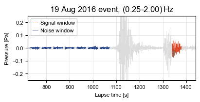

2.1 Estimate Array Covariance from Time Series#
In this example, we show how to use the utils.dsp module to process time series into a sample-covariance matrix. We use infrasound from a Hukkakero explosion event recorded by IMS station IS37 as an example.
[ ]:
#__ Import: Numerical __
import numpy as np
#__ Import: Topophone2 __
import topophone2.utils.dsp as dsp
from topophone2.utils.read import convert_to_txt
#__ Import: Plotting __
import matplotlib.pyplot as plt
Hello from topophone2!
[ ]:
#__ Set up: Plotting __
theme = ['#DC4424', '#74A466', '#24448C', '#F8BC5C']
small, large = 8, 10
plt.rcParams["font.sans-serif"] = ['Arial']
#__ Disable: Warnings __
import warnings
warnings.filterwarnings("ignore", category=UserWarning)
2.1.1 Read data#
First, we read in the time series.
[2]:
#__ Read data __
data = np.load('../data/hukkakero/IS37_hukkakero_2016-08-19.npz')
u_t = data['u_t'] # Waveform data [Pa] (receiver, time)
t = data['t'] # Lapse time vector [s] (time,)
x = data['x'] # Receiver location [m] (receiver, direction)
Second, we split the time series into signal and noise windows. The latter will help constrain the noise parameters during the inversion.
[3]:
#__ Select signal and noise windows __
T_w = 20.0 # Window half-width [s]
t_w_s = 1360 # Signal-window central time [s]
t_w_n = [750, 800, 850, 900, 950, 1000, 1050] # Noise-window central times [s]
#__ Masks __
win_s = (np.abs(t - t_w_s) < T_w) # Signal window mask (time,)
win_n = [
(np.abs(t - t_w_ni) < T_w) # Noise window mask (time,)
for t_w_ni in t_w_n
]
[ ]:
#__ Create figure and axes __
fig, ax = plt.subplots(figsize=(4,2), facecolor='white', layout='constrained')
#__ Labels __
ax.set_title(r"19 Aug 2016 event, (0.25-2.00)$\,$Hz")
ax.set_xlabel("Lapse time [s]", fontsize=small)
ax.set_ylabel("Pressure [Pa]", fontsize=small)
#__ Ticks __
ax.set_xlim(t[0], t[-1])
ax.set_ylim(-0.25, 0.25)
ax.tick_params(labelsize=small)
ax.grid(color='gainsboro', linewidth=0.5)
#__ Plot waveform __
ax.plot(t, u_t[0], lw=0.5, c='gainsboro', zorder=1)
#__ Plot signal __
ax.plot(t[win_s], u_t[0,win_s], lw=0.5, c=theme[0], zorder=2, label="Signal window")
#__ PLot noise __
for i, win_ni in enumerate(win_n):
ax.plot(t[win_ni], u_t[0,win_ni], lw=0.5, c=theme[2], zorder=2, label="Noise window" if i == 0 else "_nolegend_")
#__ Legend __
ax.legend(fontsize=small, handlelength=1.0, handletextpad=0.4)
#__ Show figure __
fig.show()

2.1.2 Estimate array-covariance within noise windows#
When calculating the sample-covariance matrix (estimate to the array-covariance matrix), the expectation over independent realisations must be taken. When the time window must be minimised, taking the mean over Slepian tapers provides a sweet spot between minimimising the time window required and maximising frequency resolution.
[ ]:
#__ Select frequency bins __
frequency = np.array([0.4, 0.5, 0.6]) # Frequency bins [Hz]
#__ Set Slepian taper bandwidth __
bw = 0.3 # Full bandwidth [Hz]
The utils.dsp.sample_covariance_matrix function applies Slepian tapers to the time series, takes the Fourier transform to the frequency domain, takes the inter-sensor cross-spectrum, and then averages over the tapers to give a sample-covariance matrix.
[6]:
#__ Instantiate storage __
Gamma_obs_noise = np.zeros((len(frequency), len(x), len(x)), dtype='complex') # Sample-covariance matrix [Pa2.Hz-1] (frequency, receiver, receiver)
N_obs_noise = 0 # Number of observations
#__ Loop through noise windows __
for win_ni in win_n:
#__ Window signal __
u_t_ni, t_ni = u_t[:,win_ni], t[win_ni]
npts_ni = np.sum(win_ni)
#__ Calculate sample-covariance matrix __
scm, f, N, _ = dsp.sample_covariance_matrix(
u_t = u_t_ni, # Time series [Pa] (receiver, time)
npts = npts_ni, # Number of points in signal
dt = t[1] - t[0], # Sampling interval [s]
bw = bw # Taper bandwidth [Hz]
)
#__ Pick out frequencies __
idx = np.argmin(np.abs(f[:, None] - frequency[None, :]), axis=0)
#__ Append to average across windows __
Gamma_obs_noise += N * scm[idx]
N_obs_noise += N
#__ Average across windows __
Gamma_obs_noise /= N_obs_noise
The utils.read.convert_to_txt function saves sample-covariance matrices in the Topophone2 data format.
[7]:
#__ Save data __
convert_to_txt(
frequency = frequency,
x = x,
Gamma_obs = Gamma_obs_noise,
N_obs = N_obs_noise,
output_path = "../data/hukkakero/noise"
)
Data info:
>>> Number of frequency points (N_freq): 3
>>> Number of receiver positions (N_rec): 10
>>> Number of coordinate dimensions (N_dim): 2
>>> Number of observations (N_obs): 70
Flattening Gamma_obs in 'C' order (receiver q varies fastest, then receiver p, then frequency).
Data successfully written to: ../data/hukkakero/noise_topophone2.txt
Estimate array-covariance within signal window#
The moveout phase of the nonstationary signal can cause edge effects for the cross-spectra between widely separated sensors (the signal in the same time window for the two different sensors is different). Therefore, we align the traces first using the function utils.dsp.best_beam_DOA which maximises the cross-correlation.
[8]:
#__ Align traces to best-beam direction-of-arrival __
ushift_t, p, shift, npts = dsp.best_beam_DOA(
u_t = u_t, # Time series [Pa] (receiver, time)
t = t, # Time vector [s] (time,)
x = x, # Receiver location [s] (receiver, direction)
p_bounds =[ # Slowness bounds [s.m-1]
(-2.3e-3,-2.1e-3), # Easterly slowness bounds
(0.8e-3, 1.0e-3) # Northerly slowness bounds
],
dp = 0.01e-3, # Slowness search interval [s.m-1]
t_w = t_w_s, # Window central time [s]
T_w = T_w, # Window half-width [s]
alpha_maj = 0.01, # Pre-FFT taper fraction
alpha_min = 0.05 # Pre-F-stat taper fraction
)
#__ Print best-beam DOA __
print(f"Best-beam apparent velocity: {1.0 / np.linalg.norm(p):.1f} m.s-1")
print(f"Best-beam backazimuth: {(np.degrees(np.arctan2(-p[0], -p[1])) % 360):.1f} deg")
Best-beam apparent velocity: 422.6 m.s-1
Best-beam backazimuth: 112.9 deg
Now, the sample-covariance matrix of the time-shifted traces is calculated using the function utils.dsp.sample_covariance_matrix, and the cross-phase is corrected afterwards by specifying the time shifts in the correction option.
[9]:
#__ Calculate sample-covariance matrix __
scm, f, N_obs, _ = dsp.sample_covariance_matrix(
u_t = ushift_t, # Shifted time series [Pa] (receiver, time)
npts = npts, # Number of points in signal
dt = t[1] - t[0], # Sampling interval [s]
bw = bw, # Taper bandwidth [Hz]
correction = - shift # Correction to shifted traces [s] (receiver,)
)
#__ Pick out frequencies __
idx = np.argmin(np.abs(f[:, None] - frequency[None, :]), axis=0)
Gamma_obs = scm[idx]
#__ Save __
convert_to_txt(
frequency = frequency,
x = x,
Gamma_obs = Gamma_obs,
N_obs = N_obs,
output_path = "../data/hukkakero/signal"
)
Data info:
>>> Number of frequency points (N_freq): 3
>>> Number of receiver positions (N_rec): 10
>>> Number of coordinate dimensions (N_dim): 2
>>> Number of observations (N_obs): 10
Flattening Gamma_obs in 'C' order (receiver q varies fastest, then receiver p, then frequency).
Data successfully written to: ../data/hukkakero/signal_topophone2.txt